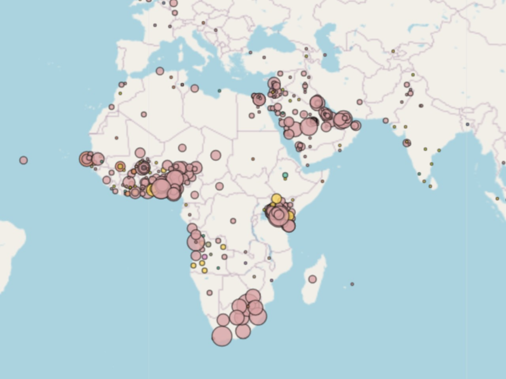
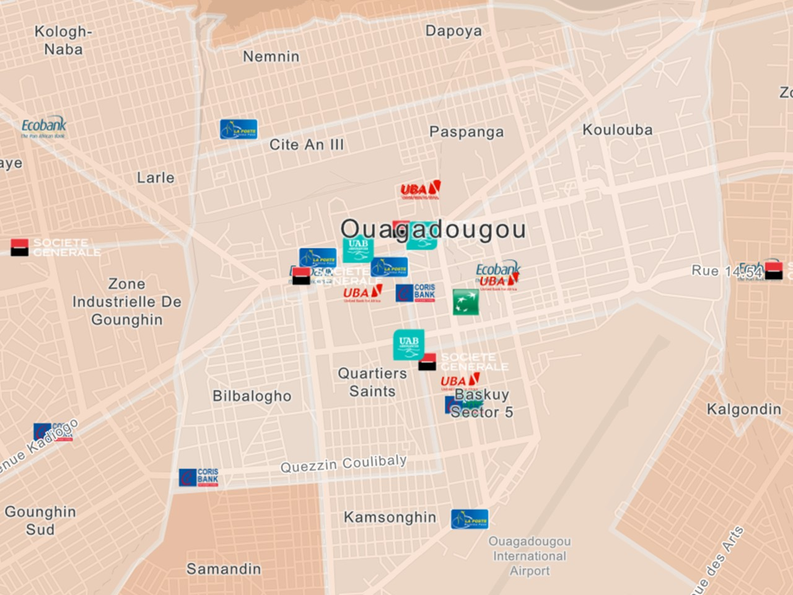

Réalisations majeures

OpenJobsAfrica
Dashboard R Shiny pour cartographier le marché de l'emploi en Afrique.
View project

Géolocalisation des agences bancaires de Ouagadougou
Géolocalisation des agences bancaires de Ouagadougou (ArcGIS Online).
View project